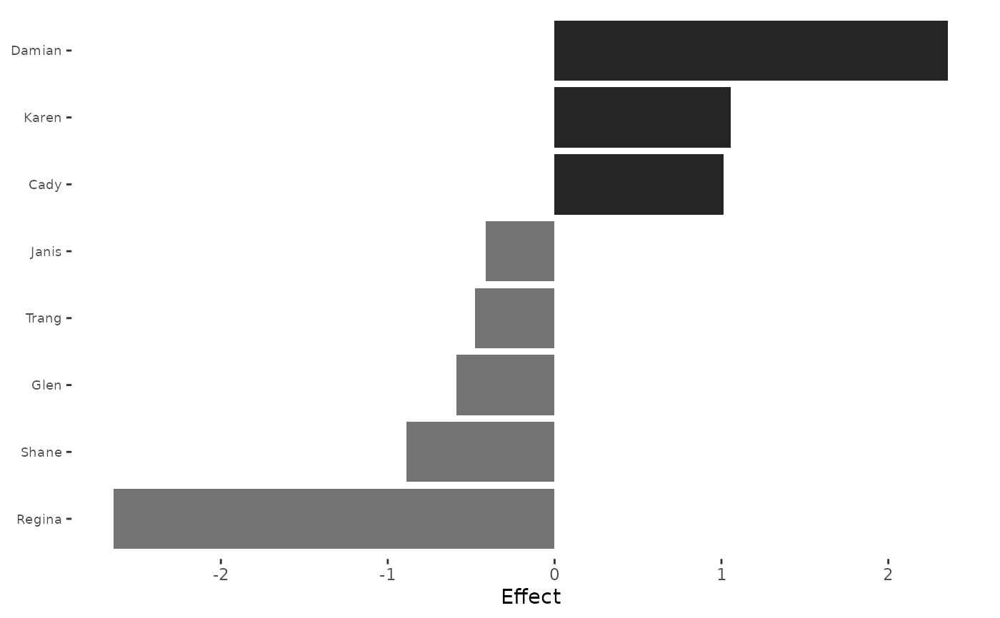
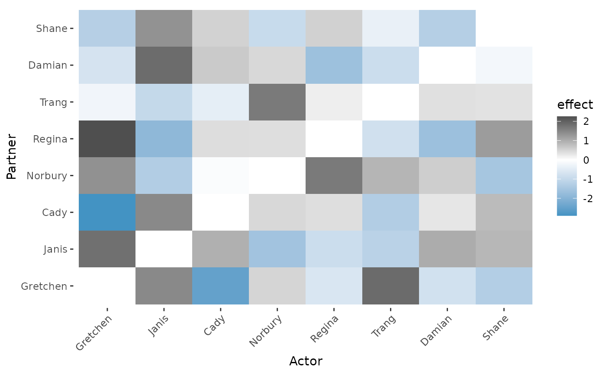

Visualizes SRM effects computed by srm_effects(). Actor and partner
effects produce horizontal bar charts sorted by absolute magnitude
(dark bars = positive, gray bars = negative). Unique (dyadic) effects
produce a heatmap on a diverging color scale: blue cells indicate
weaker-than-expected ties, white cells are close to predicted, and
dark cells indicate stronger-than-expected ties.
Usage
srm_plot(
mat,
type = c("actor", "partner", "dyadic"),
n = 10,
time = NULL,
facet = FALSE
)Arguments
- mat
An effect matrix or list of effect matrices from
srm_effects(). Must not be ansrmobject.- type
One of
"actor","partner", or"dyadic". For bipartite networks,"dyadic"selects top rows and columns independently.- n
Maximum number of actors/partners to display, selected by absolute magnitude (default 10).
- time
Optional character vector of time-point names to subset when
matis a named list.- facet
If
TRUEandmatis a list, facet actor/partner plots across time. Dyadic heatmaps are returned as separate plots instead.
Details
For the unified interface (plot directly from an srm object), use
plot.srm() instead.
Examples
# actor effect bar plot
data(classroom)
actor_eff = srm_effects(classroom, type = "actor")
srm_plot(actor_eff, type = "actor", n = 8)

# dyadic heatmap
unique_eff = srm_effects(classroom, type = "unique")
srm_plot(unique_eff, type = "dyadic", n = 8)
